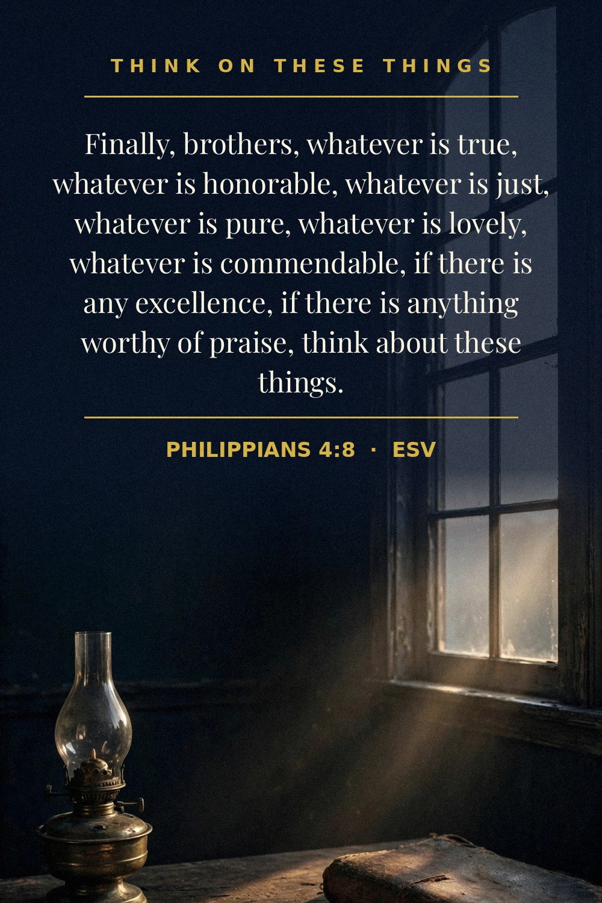

Finally, brothers, whatever is true, whatever is honorable, whatever is just, whatever is pure, whatever is lovely, whatever is commendable, if there is any excellence, if there is anything worthy of praise, think about these things.
Philippians 4:8 (ESV)
A study piece for The Hope Connection — from Lewis's "Taking Every Thought Captive" walk, November 19, 2026. All Scripture ESV.

Where this verse sits
Paul writes this from prison, to a church he loves. Right before it, in verses 6–7, he says don't be anxious about anything, but pray — and the peace of God will guard your hearts and minds in Christ Jesus. Then verse 8 tells you what to do with the mind God is guarding: give it something worthy to dwell on. Verse 9 follows with "practice these things." So the order is: pray (v.6), peace guards you (v.7), set your mind (v.8), walk it out (v.9).
One word is worth learning here. "Think about" is logizesthe — an accounting word. It means reckon it up, count it carefully, deliberately dwell on it. Paul isn't talking about thoughts that drift through. He's talking about what you sit down and do the math on, on purpose. Your mind will reckon something today — this verse just tells you what to put on the ledger.
Notice, too: Paul doesn't say "stop thinking bad thoughts." He says fill the mind with these. A mind is never empty — it gets replaced, not just emptied. That's the same fight as 2 Corinthians 10:5: take every thought captive by setting a better thought in its place. Here are the eight, one by one.
1. True — alēthē
What it is: What matches reality as God sees it. Scripture is the measure — "your word is truth" (John 17:17). A true thought agrees with what God has said about Himself, about you, and about your situation.
The cheap substitute: Feelings treated as facts. "I feel forgotten, so God has forgotten me." Fear writes its own headlines, and the flesh believes them.
In Christ: Jesus said, "I am the truth" (John 14:6). You never have to wonder what God is really like — look at Jesus.
Practice: When a fearful thought comes, ask one question: "Is that actually true — and what does God's Word say?" Replace the headline with the verse.
2. Honorable — semna
What it is: Worthy of respect — things with weight and dignity. The word was used for what is reverent, the opposite of cheap and crude.
The cheap substitute: A mind fed on mockery, gossip, and entertainment that treats holy things lightly and serious things as a joke.
In Christ: Everything about Jesus carries this weight — He never stooped to the cheap shot, never treated a person as disposable.
Practice: Before you dwell on something or share it, ask: "Does this have dignity? Would I think this thought in the Lord's presence?" You are in it either way.
3. Just — dikaia
What it is: Right and righteous — what lines up with God's standard of right, not man's shifting one. Thoughts that are fair, that give even an enemy his due, that refuse to bend the truth to win.
The cheap substitute: Grudge-thinking — rehearsing what was done to you, building a case, twisting a story until you're the hero of it.
In Christ: Jesus is the Righteous One (1 John 2:1). He judged no one by appearances but with righteous judgment (John 7:24).
Practice: When you catch yourself building a case against someone, stop and state their side fairly, the way you'd want yours stated. Justice in the mind comes before justice in the mouth.
4. Pure — hagna
What it is: Clean, without a hidden stain — from a word used for what is set apart for God. Pure thoughts are ones you could bring into the light without shame.
The cheap substitute: The double mind — clean talk on the outside, a secret reel running on the inside. What a man dwells on in secret, he eventually becomes in the open.
In Christ: Jesus was "holy, innocent, unstained, separated from sinners" (Hebrews 7:26) — and He gives His people clean hearts, not just clean records (Psalm 51:10).
Practice: Purity is guarded at the gate: eyes and ears. What you let in on purpose is what you'll dwell on by accident.
5. Lovely — prosphilē
What it is: This word appears only here in the New Testament. It means what calls forth love — beautiful in a way that draws affection out of you, not appetite. Things that make a heart softer, not harder.
The cheap substitute: Things that stir envy, lust, resentment, or self-pity — content that leaves you loving less than when you started.
In Christ: "Altogether lovely" is the bride's word for her beloved (Song of Solomon 5:16), and believers have always heard Christ in it. He is the loveliest object a mind can rest on.
Practice: Ask of what you're dwelling on: "Is this making me more loving — toward God, toward family, toward people?" If it hardens you, it isn't lovely, whatever it looks like.
6. Commendable — euphēma
What it is: Well-spoken-of — literally "good-sounding." Things that would be a credit to anyone if said out loud. Paul uses a word tied to speech: dwell on what is worthy of being repeated.
The cheap substitute: Dwelling on what's shameful, scandalous, or tearing-down — the mental equivalent of passing along bad reports.
In Christ: Even His enemies ran out of true charges against Him; the centurion at the cross said, "Certainly this man was innocent" (Luke 23:47).
Practice: A simple test for a thought: "If this thought became my words, would they be commendable?" Your speech tomorrow is being written by your thoughts today.
7. Excellence — aretē
What it is: Moral excellence, virtue at its best — goodness that stands up under pressure. In Paul's day this was the word for the highest human quality; he takes it and aims it at Christ's standard.
The cheap substitute: Settling — "good enough" thinking, excusing in yourself what you'd never excuse in the sermon. A mind that aims low rarely rises higher.
In Christ: Peter says God called us "to his own glory and excellence" (2 Peter 1:3). The standard isn't other Christians — it's Christ Himself.
Practice: Don't ask, "Is this thought sinful?" only. Ask, "Is it excellent? Is it the best use of the mind Christ bought?" Raise the bar from barely-allowed to worthy.
8. Worthy of praise — epainos
What it is: What God Himself would applaud. The list ends where it should: not with man's applause but God's. If heaven would commend it, it belongs on the ledger of your mind.
The cheap substitute: Dwelling on what wins man's praise — being seen, being right, being admired — while heaven stays silent.
In Christ: The Father's own voice over Jesus: "This is my beloved Son, with whom I am well pleased" (Matthew 3:17). And in Christ, that pleasure reaches you — not because your record earned it, but because His did.
Practice: End the reckoning here: "Would God praise this line of thought?" Then, daily, give your mind the most praise-worthy subject there is — the gospel itself.
How the eight hold together
Truth is the foundation (it comes first). Honorable, just, and pure describe the character of the thought. Lovely and commendable describe its effect — on your heart and on your speech. Excellence and worthy of praise set its standard — nothing less than what God applauds. And every one of the eight is perfectly true of Jesus Christ, which is why the surest way to think on these things is to think on Him (Hebrews 12:2).
Reflect — Questions & Answers
1. Which quality comes first in Paul's list, and why does truth have to stand at the head of the line? Truth — because a thought that isn't true can't be any of the rest. Feelings treated as facts poison the whole ledger; God's Word is the measure: "your word is truth" (John 17:17).
2. How does verse 8 finish what verses 6–7 began about anxiety and the peace of God? Verses 6–7 tell us to pray instead of being anxious, and promise that God's peace will guard our hearts and minds. Verse 8 gives the guarded mind its orders — what to dwell on — and verse 9 says practice it. The peace guards the gate; this verse sets the watch.
3. Which one of the eight is weakest in my thought life right now, and what do I do about it? Name the weakest one honestly — then choose one specific replacement thought that is true and found in Christ, and reckon on it deliberately today. For truth: "I will never leave you nor forsake you" (Hebrews 13:5). Don't just fight the old thought; set a better one in its place.
Philippians 4:8 is the third verse in the "Taking Every Thought Captive" memory set — one verse a week, learned slow and held onto. Start with 2 Corinthians 10:5, then Romans 12:2, then this one.
Companion deep-dive study: Arrest the Thought, Fill the Mind — how 2 Corinthians 10:5 and Philippians 4:8 fight the same war, worked out step by step.
Christ Proclaimed. Jesus is Lord.
Meeting others where they are in the Name of Jesus